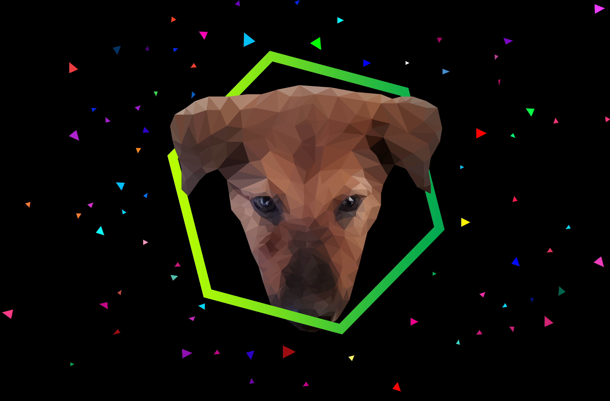

1 / 6
Fundamental of Multimedia - Bitmapped Image
2 / 6
Fundamental of Multimedia - Bitmapped Image
3 / 6

Fundamental of Multimedia - Vector Image
4 / 6

Fundamental of Multimedia - GIF
5 / 6

Fundamental of Multimedia - Bitmapped Image
6 / 6
Tamadun Islam dan Tamadun Asia
❮
❯